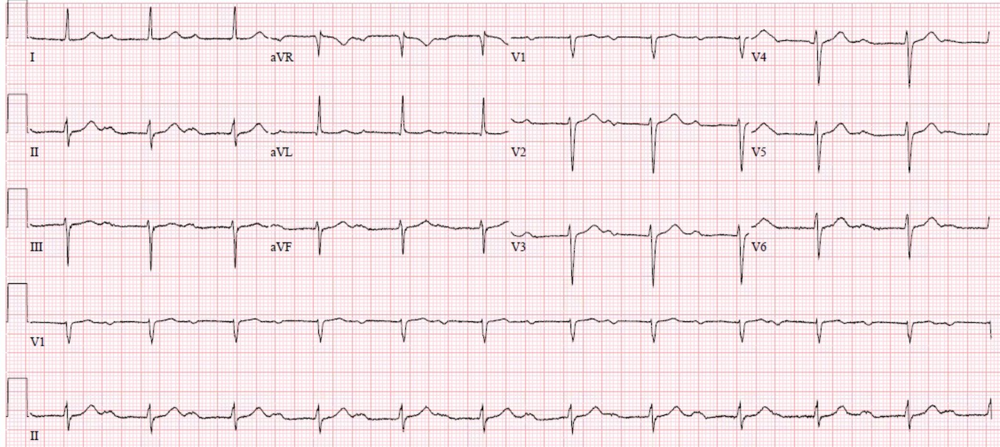
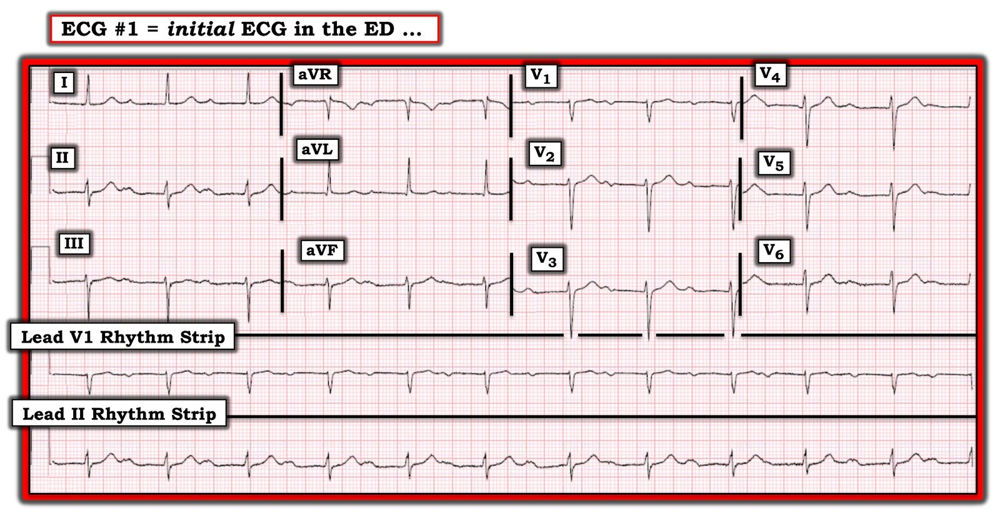
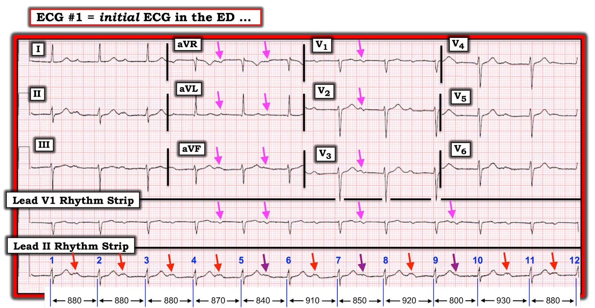
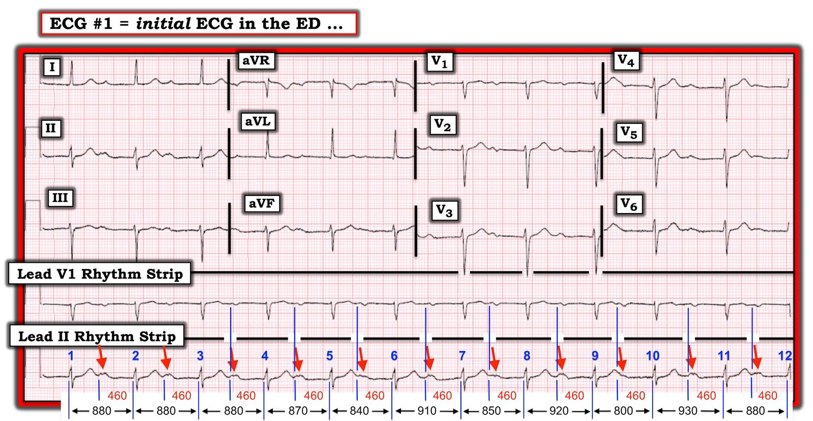
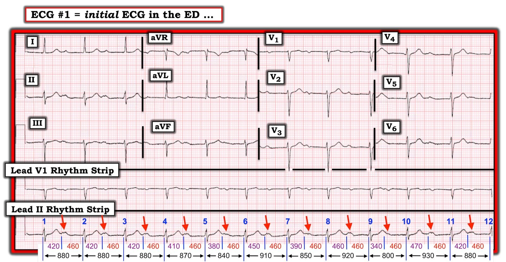
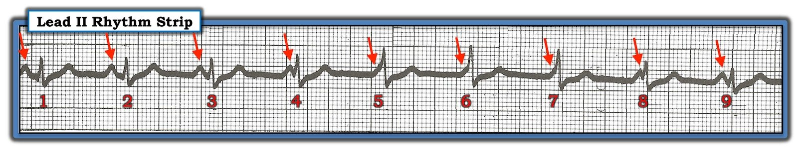
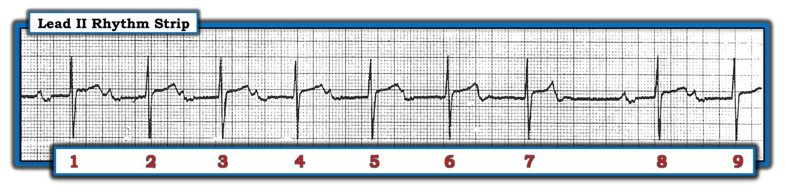
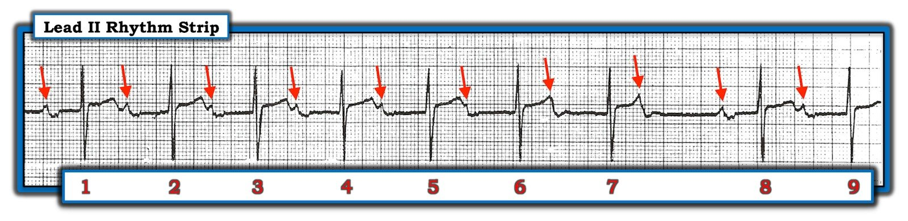

24/05/2020 — Bạn nghĩ gì về người đàn ông cao tuổi “nghi co giật” này?
Bản dịch tiếng Việt của bài "What do you think of this elderly man with “possible seizure”?" – Dr. Smith’s ECG Blog. Giữ nguyên toàn bộ 10 hình ảnh của bản gốc.
Tác giả: Pendell Meyers
(kèm phần giải thích thật tuyệt vời và kỹ lưỡng về dấu hiệu này của Ken Grauer).
Tại bệnh viện của tôi, trong quá trình phân loại (triage), những bệnh nhân có bất kỳ triệu chứng nào có thể hiểu một cách mơ hồ là đột quỵ được đưa vào khu bệnh nặng, và một nhân viên y tế được yêu cầu thực hiện “kiểm tra thần kinh” (neuro check), gồm hỏi bệnh sử, tiền sử và khám nhanh (H and P) để quyết định có nên kích hoạt quy trình đột quỵ hay không.
Một người đàn ông 70 mấy tuổi được đưa đến tôi để kiểm tra thần kinh, và nhân viên khu phân loại cho biết họ cũng lo ngại về khả năng co giật. Lúc phân loại, bệnh nhân tỉnh táo, định hướng tốt, dấu hiệu sinh tồn bình thường. Ông kể rằng điều cuối cùng ông nhớ là đang ngồi ở bàn làm giấy tờ, rồi ông nhớ mình đang nằm dưới đất nhìn lên nhân viên cấp cứu ngoài viện. Vợ ông nghe thấy một tiếng động và thấy ông nằm trên sàn cạnh bàn làm việc. Ông không nhớ có cảm giác gì bất thường trước sự việc, trước đó trong ngày vẫn khỏe mạnh, và tại thời điểm tôi đánh giá thì cảm thấy hoàn toàn bình thường, không có than phiền gì. Cần lưu ý, tuần trước ông đã có một cơn y hệt nhưng không đi khám.
Vì vậy tôi cho ghi điện tâm đồ, vì ngất đứng cao trong danh sách chẩn đoán phân biệt.
Đây là điện tâm đồ ban đầu của ông:


Diễn giải: Nhịp xoang kèm blốc AV độ 1 cực độ (khoảng PR xấp xỉ 500 msec!)
QRS hẹp, đều, có thể xem là đáp ứng tiêu chuẩn hình thái của LAFB. Đoạn ST và sóng T bình thường, nhưng ngay sau chúng là một sóng khác mà thoạt đầu ở một số chuyển đạo (nhất là dải nhịp chuyển đạo II) có thể bị nhầm với sóng U. Tuy nhiên, xem cả 12 chuyển đạo cho thấy sóng này có hình thái sóng P điển hình như sách giáo khoa (hai pha lên-xuống ở V1, dương ở II). Ngoài ra, không có sóng nào khác có thể là sóng P, do đó nếu đây là sóng U thì nhịp sẽ phải là nhịp bộ nối (nhân tiện, máy tính đã đọc nhầm đây là nhịp bộ nối). Độ rộng của sóng P và “bướu thứ hai” của sóng P ở chuyển đạo II có thể gợi ý lớn nhĩ, nhưng điều này không đặc biệt có ý nghĩa lâm sàng trong ca này.
Giả sử không có sóng P thừa nào ẩn trong các phức bộ QRS (tôi không thấy sóng nào), thì sóng P và phức bộ QRS có quan hệ 1:1. Không có nhát bị rớt, và khoảng PR không kéo dài dần. Hình ảnh này có hai nguyên nhân khả dĩ:
1) Nhịp xoang kèm blốc AV độ 1
2) Nhịp xoang kèm blốc AV độ 3 hoàn toàn, với một nhịp bộ nối có tần số trùng khớp chính xác với tần số của nút SA (hai nhịp này phân ly với nhau do blốc AV hoàn toàn, và kết quả được gọi là “phân ly đồng nhịp” (isorhythmic dissociation))
Cực kỳ khó xảy ra việc hai nhịp riêng biệt, phân ly với nhau lại có tần số CHÍNH XÁC bằng nhau, vì vậy khả năng #1 cao hơn nhiều so với #2. Hình ảnh này càng kéo dài lâu thì khả năng phân ly đồng nhịp (#2) càng tiến dần về zero.
Vì vậy, để chắc chắn, tôi đứng cạnh giường và theo dõi kỹ monitor tim trong vài phút. Không hề có một nhát nào bị rớt, và khoảng PR không bao giờ thay đổi.
Chẩn đoán là nhịp xoang kèm blốc AV độ 1, với khoảng PR cực kỳ dài.
Mọi điện tâm đồ có nhịp chậm và/hoặc blốc tim đều cần được cân nhắc nguyên nhân tăng kali máu và OMI thành dưới (vì RCA cấp máu cho nút SA và nút AV), nhưng điện tâm đồ này không cho thấy bằng chứng nào của các nguyên nhân đó.
Vậy nguyên nhân gây ra sự việc của bệnh nhân là gì?
Giải thích có khả năng nhất là ông đã bị blốc tim độ 2 hoặc độ 3 thoáng qua, gây nhịp chậm và giảm cung lượng tim dẫn đến ngất. Giữa các cơn này, điện tâm đồ của ông chỉ cho thấy blốc tim độ một như một manh mối về những gì đã xảy ra.
Chúng tôi rà soát kỹ thuốc ông đang dùng và không thấy thuốc chẹn beta, thuốc chẹn kênh calci, digoxin hay bất kỳ thuốc nào khác có thể gây ra hoặc góp phần gây nhịp chậm. Chúng tôi giữ ông trên monitor tim kèm miếng dán tạo nhịp để phòng hờ, nhưng chưa bao giờ phải dùng tới. Kali máu của ông trở về bình thường, và troponin âm tính. Ông không có thêm cơn ngất nào. Ông được nhập khoa tim mạch.
Ông đã được đặt máy tạo nhịp và cho đến nay vẫn ổn.
Những điểm cần học:
Bất cứ khi nào co giật hoặc ngất nằm trong chẩn đoán phân biệt, thì cái còn lại cũng nằm trong chẩn đoán phân biệt.
Blốc AV độ 1 được định nghĩa là khoảng PR lớn hơn 200 msec. Đa số trường hợp nằm trong khoảng 200-300 msec, và 500 msec (như ca này) là dài bất thường.
Mặc dù blốc AV độ 1 thường không có hậu quả gì tại khoa cấp cứu, cần xem xét nghiêm túc khi bệnh nhân có triệu chứng phù hợp với blốc AV mức độ cao hơn từng lúc. Tôi không biết có ngưỡng PR cụ thể nào cho thấy nguy cơ đặc biệt cao ở bệnh nhân không triệu chứng.
Hãy dùng cả 12 chuyển đạo để thấy thêm nhiều ví dụ và hình thái của một sóng, nhằm phân biệt đó là sóng P kèm blốc AV độ 1 hay là sóng U.
Nhớ tìm thêm một loạt sóng P ẩn trong phức bộ QRS.
Khi tỷ lệ P so với QRS là 1:1, phân ly đồng nhịp là một khả năng ít xảy ra và càng ngày càng ít khả năng hơn theo thời gian.
Blốc AV độ 1 thường được cho là không có hậu quả gì, tuy nhiên trong một số trường hợp, nó là dấu chỉ của bệnh lý nút AV nghiêm trọng và dấu chỉ của blốc AV mức độ cao hơn từng lúc.
Tại khoa cấp cứu, các nguyên nhân quan trọng nhất của nhịp chậm và blốc AV được ghi nhớ bằng mẹo “DIE”: Drugs – thuốc (CCB, BB, digoxin, v.v.), Ischemia – thiếu máu cục bộ (thường của RCA, động mạch cấp máu cho nút SA và nút AV) và Electrolytes – điện giải (tăng kali máu).
Đọc điện tâm đồ chi tiết là yếu tố sống còn trong ngất. Cá nhân tôi dùng và giảng dạy mẹo ghi nhớ WOBBLER.

===================================
BÌNH LUẬN CỦA TÔI, bởi KEN GRAUER, MD (24/5/2020):
===================================
Một ca thú vị do Dr. Meyers trình bày! Bệnh nhân là một người đàn ông 70 mấy tuổi, đến khoa cấp cứu vì nghi ngất và có điện tâm đồ bất thường. Trong phần bàn luận của Dr. Meyers, các CÂU HỎI sau đã được nêu ra:
- LÀM SAO CHÚNG TA BIẾT ĐƯỢC sóng lệch dương nhỏ mà ta thấy sau sóng T, gần giữa mỗi khoảng R-R là sóng P hay sóng U?
- Ở điện tâm đồ #1 — LÀM SAO ta có thể loại trừ khả năng blốc AV hoàn toàn (tức là độ 3)?
- Liệu có thể có “phân ly nhĩ thất đồng nhịp” (isorhythmic AV dissociation) hay không? — tức là tình trạng trong đó ổ tạo nhịp nhĩ và ổ tạo nhịp nút AV biểu hiện tần số tim gần như bằng nhau?
- Nhịp có đều không?
- LÀM SAO compa đo (calipers) có thể giúp bạn trả lời nhanh chóng các câu hỏi trong 4 gạch đầu dòng phía trên?
Việc phân tích ca này cũng đặt ra các CÂU HỎI Lâm sàng sau:
- Ý nghĩa lâm sàng của blốc AV độ 1 là gì?
- Khoảng PR có thể dài đến mức nào mà vẫn dẫn truyền được?
- Blốc AV độ 1 có trở nên “nguy hiểm” hơn khi khoảng PR trở nên “rất” dài không? NẾU có — TẠI SAO?
Bình luận dưới đây của tôi nhằm đưa ra một góc nhìn khác để trả lời các câu hỏi trên.
- Để rõ ràng — tôi đã đưa lại điện tâm đồ ban đầu của ca này ở Hình 1:


SUY NGHĨ CỦA TÔI: BẠN có nghĩ rằng nhịp ở điện tâm đồ #1 là đều không? Mặc dù khi nhìn lướt rất dễ cho rằng nhịp ở điện tâm đồ #1 là đều — thực ra nhịp này không đều!
- Dùng compa đo sẽ cho bạn biết chỉ trong vài giây rằng nhịp ở điện tâm đồ #1 không đều (Hình 2).


LÀM SAO Phân biệt sóng P với sóng U?
Đôi khi — có thể khó phân biệt sóng P với sóng U. MẤU CHỐT để phân biệt — là xác định XEM sóng lệch đang xét có liên quan với những gì đứng trước nó (tức là với phức bộ QRS và sóng T nằm bên trái sóng lệch đang xét) — hay với những gì đứng sau nó (tức là với phức bộ QRS kế tiếp, nằm bên phải sóng lệch đang xét)?
- Dùng compa đo — tôi đã đo cẩn thận khoảng PR trước mỗi nhát bóp ở Hình 3.
- LƯU Ý rằng khoảng PR trước mỗi nhát bóp ở Hình 3 vẫn hằng định ( = 460 msec). Việc khoảng PR ở Hình 3 vẫn hằng định mặc dù khoảng R-R thay đổi — có nghĩa là mỗi sóng P này đều được dẫn truyền (dù kèm blốc AV độ 1 rõ rệt).


Ngược lại — khoảng RP không hằng định — như thể hiện qua các khoảng RP có thời gian khác nhau được ghi bằng số màu TÍM ở Hình 4.
- Điều này có nghĩa là mỗi sóng lệch dưới các mũi tên ĐỎ ở Hình 4 hẳn phải liên quan với phức bộ QRS đứng sau nó — chứ không phải với phức bộ QRS và sóng T đứng trước …
- Điều này khẳng định các sóng lệch dưới mũi tên ĐỎ ở Hình 4 là sóng P. NẾU chúng là sóng U — thì khoảng R-“U” sẽ phải hằng định.


Vì sao chúng ta Biết nhịp ở điện tâm đồ #1 không phải là blốc AV độ 2 hay độ 3?
Chúng ta đã xác định rằng mỗi sóng P ở điện tâm đồ #1 đều được dẫn truyền với khoảng PR kéo dài cực độ (460 msec). Nhưng LÀM SAO chúng ta có thể loại trừ khả năng có blốc AV ở mức độ cao hơn?
- ĐIỂM THEN CHỐT (PEARL) #1 — Dr. Meyers đã chỉ cho chúng ta “điểm then chốt” này — đơn giản là hãy quan sát monitor trong một khoảng thời gian — cho đến khi thấy rõ LIỆU nhịp có đang thay đổi hay không (tức là trong ca này — liệu mối liên hệ giữa mỗi sóng P và phức bộ QRS kế tiếp sau nó có duy trì cùng một khoảng PR 460 msec hay không).
- Như Dr. Meyers đã nêu — hết sức khó xảy ra phân ly nhĩ thất đồng nhịp mà không có thay đổi rõ ràng nào của khoảng PR, qua nhiều nhát bóp như vậy, từ các ổ tạo nhịp nút AV và nút SA phát xung đồng thời.
THẾ NÀO LÀ Phân ly nhĩ thất “Đồng nhịp”?
Thuật ngữ chung phân ly nhĩ thất đơn giản có nghĩa là trong một khoảng thời gian nhất định, sóng P xoang không liên quan với các phức bộ QRS lân cận. Nghĩa là, các sóng P đứng trước một hoặc nhiều phức bộ QRS không được dẫn truyền xuống thất.
- Phân ly nhĩ thất có thể từng lúc, tái diễn và/hoặc ngắn ngủi — hoặc — có thể hoàn toàn và dai dẳng/vĩnh viễn, như xảy ra trong blốc AV độ 3.
- Phân ly nhĩ thất được gọi là “đồng nhịp” (isorhythmic) — khi có 2 ổ tạo nhịp độc lập (thường là sóng P xoang từ nút SA và một ổ bộ nối gia tốc) — với 2 vị trí tạo nhịp này có tần số bằng nhau (hoặc gần như bằng nhau). Ở Hình 5 — một “bức tranh” đáng giá hơn 1,000 lời nói.


LƯU Ý: Phân ly nhĩ thất “đồng nhịp” thực sự giống như một cuộc đua ngựa — ở chỗ thay vì tần số của ổ tạo nhịp nút SA và nút AV luôn gần bằng nhau một cách cố định — lại có sự giằng co qua lại — với lúc đầu một con ngựa (tức là một ổ tạo nhịp) dẫn trước một chút xíu — rồi con ngựa kia (tức là ổ tạo nhịp còn lại) giành lại khoảng cách dẫn trước mỏng manh vô cùng đó — và cứ thế qua lại.
- Sự giằng co qua lại này có thể thấy được ở Hình 5 — trong đó có một thay đổi rất nhỏ nhưng có thật ở cả tần số xoang và tần số thoát nút AV gia tốc. Kết quả là — khoảng PR ở Hình 5 liên tục thay đổi từ nhát này sang nhát khác.
- Ngược lại — ở điện tâm đồ #1, mối liên hệ giữa sóng P và phức bộ QRS kế tiếp trong Hình 4 vẫn GIỮ NGUYÊN (tức là khoảng PR không đổi = 460 ms).
- ĐIỂM THEN CHỐT (PEARL) #2 — Phân ly nhĩ thất không bao giờ là một “chẩn đoán”. Thay vào đó — nó là một tình trạng do “một điều gì khác” gây ra. Có 3 Nguyên nhân gây Phân ly nhĩ thất: i) Bản thân blốc AV (độ 2 hoặc độ 3); ii) Chiếm quyền (usurpation) — trong đó sóng P tạm thời không dẫn truyền vì một nhịp bộ nối gia tốc chiếm chỗ (tức là “chiếm quyền” kiểm soát nhịp); và, iii) Mặc định (default) — trong đó một nhịp thoát bộ nối chiếm chỗ theo kiểu “mặc định” (tức là do nút xoang chậm lại) — như có thể xảy ra khi đang dùng một thuốc như thuốc chẹn ß.
- Nhiệm vụ của người thầy thuốc là tìm ra nguyên nhân gây phân ly nhĩ thất ở mỗi nhịp cụ thể. Nhiệm vụ này không chỉ mang tính hàn lâm — vì xử trí phù hợp phụ thuộc vào việc tìm ra nguyên nhân gây phân ly nhĩ thất. Có thể cần hoặc không cần điều trị tích cực. Ví dụ — điều trị tối ưu cho phân ly nhĩ thất hoàn toàn do “chiếm quyền”, chẳng hạn với một nhịp bộ nối gia tốc do ngộ độc digitalis, rất đơn giản: Ngừng digoxin!
- ĐIỂM THEN CHỐT (PEARL) #3 — Phân ly nhĩ thất hoàn toàn không giống với blốc AV độ 3! Đây là một trong những khái niệm bị hiểu sai phổ biến nhất trong toàn bộ lĩnh vực đọc rối loạn nhịp! Blốc AV hoàn toàn chỉ là một trong 3 nguyên nhân có thể gây phân ly nhĩ thất. Bệnh nhân bị “phân ly nhĩ thất hoàn toàn” thực ra có thể không hề có blốc AV ở bất kỳ mức độ nào. Đó là trường hợp ở Hình 5 — trong đó sau nhát #1, không một sóng nào trong 8 sóng P còn lại của bản ghi này được dẫn truyền. Nhưng vì không một sóng nào trong 8 sóng P này có cơ hội dẫn truyền (tức là vì khoảng PR đứng trước các nhát #2 đến #9 quá ngắn để dẫn truyền) — chúng ta KHÔNG CÓ CÁCH nào biết được liệu sóng P có thể dẫn truyền NẾU được trao cơ hội hay không! Vì vậy, chẩn đoán đúng cho nhịp ở Hình 5 không phải là “phân ly nhĩ thất” — mà đúng hơn là “Nhịp xoang kèm phân ly nhĩ thất do “chiếm quyền”, gây ra bởi một ổ tạo nhịp bộ nối hơi gia tốc ở tần số 74/phút”.
- ĐIỂM THEN CHỐT (PEARL) #4 — Blốc AV hoàn toàn (hay độ 3) được coi là có mặt khi không xung động nào từ phía trên (sóng P) có thể dẫn truyền xuống thất. MẤU CHỐT của định nghĩa này là cần chứng minh rằng sóng P không dẫn truyền được mặc dù đã có cơ hội đầy đủ để làm vậy — điều này đòi hỏi chúng ta phải thấy sóng P xuất hiện ở mọi pha của chu kỳ R-R (tức là có cơ hội dẫn truyền — nhưng không dẫn truyền được). Lưu ý rằng không sóng nào trong 8 sóng P không dẫn truyền ở Hình 5 có bất kỳ “cơ hội” dẫn truyền nào — đó là lý do chúng ta không thể chẩn đoán bất kỳ mức độ blốc AV nào từ bản ghi cụ thể này.
- ĐIỂM THEN CHỐT (PEARL) #5 — Trong đa số trường hợp, NẾU mức độ blốc AV là hoàn toàn (độ 3) — thì nhịp thất phải ít nhất là khá đều. Đó là vì các nhịp thoát xuất phát từ nút AV, bó His hoặc thất thường là những nhịp khá đều. Có thể có ngoại lệ (ví dụ trong lúc hồi sinh tim phổi) — nhưng ngay cả khi đó, thường vẫn sẽ có một kiểu đều đặn nhận ra được của nhịp thất. Quay LẠI với Hình 2 — sự không đều rõ ràng của nhịp thất (khoảng R-R thay đổi từ 800 đến 930 ms) là thêm một manh mối nữa cho chúng ta biết blốc AV hoàn toàn rất khó xảy ra ở điện tâm đồ #1!
- NẾU quan tâm thêm tới “Quan điểm của tôi” về Những điều cơ bản của Blốc AV — BẤM VÀO ĐÂY. Để đi thẳng tới phần phân biệt Phân ly nhĩ thất với Blốc AV hoàn toàn — BẤM tại 49:25 trong video.
NHỮNG ĐIỂM THEN CHỐT (PEARLS) về Blốc AV độ 1:
Ca bệnh hôm nay nêu ra một loạt khái niệm liên quan đến Blốc AV độ 1:
- Theo truyền thống — chẩn đoán blốc AV độ 1 được định nghĩa là khoảng PR dài hơn 0,20 giây (tức là rõ ràng dài hơn 1 ô LỚN trên giấy kẻ ô điện tâm đồ). Tuy vậy — một số người bình thường có khoảng PR hơi vượt quá giới hạn trên này. Điều này đặc biệt đúng ở người trẻ tuổi chơi thể thao, những người thường có trương lực phế vị tăng. Vì vậy — tôi muốn khoảng PR phải ít nhất 0,22 giây rồi mới nói là có blốc AV độ 1.
- Giá trị bình thường của khoảng PR ở trẻ em thì khác. Tim trẻ em nhỏ hơn. Do đó xung điện cần ít thời gian hơn để đi qua hệ dẫn truyền của trẻ. Ví dụ — một khoảng PR 0,18 giây là dài đối với một nhũ nhi.
- Ở người trẻ tuổi — nguyên nhân của blốc AV độ 1 thường là do tăng trương lực phế vị. Đây có thể là một “hiệu ứng luyện tập” — sẽ mất đi khi ngừng tập luyện. Ngược lại — các nguyên nhân gây blốc AV độ 1 ở người lớn tuổi bao gồm xơ hóa (lão hóa) hệ dẫn truyền; bệnh động mạch vành; viêm cơ tim; thấp tim; bệnh thâm nhiễm, bệnh Lyme; và các rối loạn thần kinh-cơ.
- Khoảng PR được coi là “ngắn” — nếu đo được dưới 0,12 giây ở chuyển đạo II (như có thể xảy ra trong WPW khi nút AV bị đi tắt). Tuy vậy — một số bệnh nhân bình thường có thể có khoảng PR hơi dưới 0,12 giây mà không nhất thiết có đường phụ (họ có thể có nút AV nhỏ về mặt giải phẫu — hoặc dẫn truyền qua nút AV nhanh hơn bình thường).
- Khoảng PR có thể DÀI ĐẾN MỨC NÀO mà vẫn dẫn truyền xuống thất? Câu trả lời là rất dài! Tôi đã thấy những khoảng PR dài hơn 1,0 giây mà vẫn dẫn truyền xuống thất trong bối cảnh blốc AV Mobitz I.
- Về lâm sàng — Hầu hết bệnh nhân blốc AV độ 1 vẫn không có triệu chứng và không cần can thiệp. Điều này đặc biệt đúng khi mức độ nặng của blốc AV độ 1 không lớn (tức là khoảng PR dưới 0,30 giây). Một khi khoảng PR kéo dài quá 0,30 giây — sự chậm trễ co bóp thất xảy ra có thể khiến tâm nhĩ co bóp khi các van nhĩ thất đang đóng, làm giảm cung lượng tim. Điều này có thể dẫn tới một loạt triệu chứng tương tự như “hội chứng máy tạo nhịp” (tức là chóng mặt, mệt mỏi, choáng váng, tiền ngất/ngất, khó thở và/hoặc đau ngực).
- Đôi khi — có thể cần cấy máy tạo nhịp vĩnh viễn ở những bệnh nhân blốc AV độ 1 rõ rệt (tức là khoảng PR dài hơn đáng kể so với 0,30 giây) mà có triệu chứng là hậu quả trực tiếp của khoảng PR kéo dài. Có vẻ đây là điều đã xảy ra trong ca hôm nay — trong đó người đàn ông 70 mấy tuổi này đến viện với nghi ngờ ngất + khoảng PR kéo dài rõ rệt ~460 ms.
- Điều cốt lõi: Mặc dù đại đa số bệnh nhân blốc AV độ 1 không có triệu chứng và diễn biến tốt mà không cần điều trị — điều quan trọng là phải lưu ý tới các bệnh tim và các bệnh nền khác mà bệnh nhân có thể mắc, vì chúng có thể ảnh hưởng đến tiên lượng. Khi bệnh nhân lớn tuổi hơn — blốc AV độ 1 có thể tiến triển thành khoảng PR kéo dài hơn nữa, blốc AV mức độ cao hơn và/hoặc xuất hiện các rối loạn nhịp nhĩ, bao gồm AFib. Thỉnh thoảng có bệnh nhân đến viện với blốc AV độ 1 rõ rệt + triệu chứng do chính nó gây ra, có thể cần đặt máy tạo nhịp.
- Để xem một Bài tổng quan ngắn gọn về Blốc AV độ 1 đăng trên NCBI StatPearls, 2019 — BẤM VÀO ĐÂY.
Cuối cùng — Hãy xem xét nhịp trong Hình 6. Chuyện GÌ đang xảy ra?
- BẠN có đoán được TẠI SAO tôi lại đưa nhịp ở Hình 6 vào bài viết về blốc AV độ 1 này không?


DIỄN GIẢI Hình 6: Nhịp khá đều — ngoại trừ một khoảng ngưng ngắn sau nhát #7. Phức bộ QRS hẹp — và có vẻ có sóng P. BẠN có xác định được tất cả các sóng P không?
- GỢI Ý: Dùng compa đo (calipers) sẽ giúp phát hiện tất cả các sóng P dễ hơn nhiều!
Xác định sóng P ở Hình 6: Tôi đã thêm các mũi tên ĐỎ vào Hình 7 để đánh dấu vị trí của tất cả các sóng P:
- Nhịp nhĩ thực ra khá đều với tần số ~60-65/phút (các mũi tên ĐỎ).
- Lưu ý rằng có một sóng P ẩn trong sóng T của nhát #6. Sóng P tiếp theo rõ hơn — vì nó tạo ra một gai nhọn trên sóng T của nhát #7.
- ĐIỂM THEN CHỐT CUỐI CÙNG (PEARL): Đây là một chu kỳ Wenckebach dài! Đôi khi với blốc AV độ 2, Mobitz loại I ( = Wenckebach AV) — sẽ có một chuỗi dài các nhát trước khi có một nhát bị rớt. Ví dụ, ở Hình 7 — khó nhận ra rằng khoảng PR đang tăng dần khi đi từ nhát #2 — sang các nhát #3, 4, 5 và 6. Đó là vì chu kỳ các nhát cho tới khi có một nhát bị rớt thì dài — và, “bước tăng” khoảng PR giữa nhát này với nhát kế tiếp thì nhỏ. Trong những trường hợp như vậy — MẤU CHỐT giúp nhận ra nhanh Mobitz I là đo khoảng PR ở đầu chuỗi (tức là khoảng PR của nhát #1) — rồi so với khoảng PR ở cuối chuỗi ngay trước nhát bị rớt. Giờ thì rõ ràng là khoảng PR của nhát #7 dài hơn hẳn khoảng PR của nhát #1. Và rồi sang chu kỳ tiếp theo — khoảng PR của nhát #8 lại ngắn lại.
- T.B. (P.S.): NẾU bạn muốn xem thêm một Ca minh họa về hiện tượng này — hãy XEM ECG Video dài ~11 phút của tôi về chủ đề này.


Xin CẢM ƠN Dr. Meyers đã trình bày ca bệnh thú vị này!